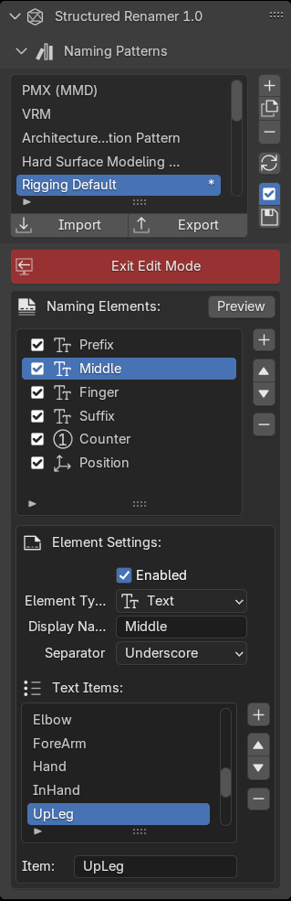

User Guide¶
The operation panel is located at 3DView > Tool > Structured Renamer. It has two display modes: Renaming Mode and Edit Mode.
Renaming Mode¶
{kind=link}
This is the screen for pattern selection and actual renaming operations.
Naming Patterns¶
This is a list of naming patterns. The selected pattern will be used for the actual renaming operation.
If there is a
*next to the pattern name, it means changes are not reflected in the cache. Press the reload button () to reflect the changes before performing renaming operations.
Warning
Settings are saved in user preferences. If you exit Blender without saving, your settings will be lost!
When AutoSave () is enabled, settings will be automatically saved each time you exit Edit Mode.
Import / Export¶
Naming Patterns can be imported/exported as JSON files.
Related: File Paths, Json Schema
Enter Edit Mode¶
Switch to Edit Mode to edit patterns (add, delete, or reorder elements). For details, see Edit Mode.
Name Elements¶
Displays a list of naming elements for the selected pattern.
Each element has item buttons (e.g., Spine, Arm, Leg, etc.).
Pressing an item button adds or replaces the element in the selected object’s name.
Use the delete button to remove the element from the name.
For counter elements, press “…” at the end to specify manually.
Edit Mode¶
{kind=link}
This is the screen for editing patterns (adding, deleting, or reordering elements).
Exit Edit Mode¶
Closes the editing screen and returns to Renaming Mode.
Updates the regular expression cache for modified patterns.
Name Elements¶
This is a list of name elements. The order represents the word order (e.g., the first item is Prefix, the last item is Suffix).
You can toggle enable/disable, change order, add, and delete elements.
Press the Preview button to see random combinations based on current settings.
Pattern Constraints
A pattern requires at least one text element and one counter element.
Element Settings¶
Settings for each element.
Common Settings¶
- Enabled
When disabled, the element is excluded from the pattern.
- Element Type
You can select Text, Position, or Counter.
- Display Name
A freely configurable display name.
- Separator
A string inserted between the previous element and the current word. Not required for the first element. (e.g., “Prefix” + “_Middle” + “-Suffix”) You can select Underscore(
_), Dash(-), Dot(.), Space(- Boundary Detection
This option is only available when Separator is set to None.
When enabled, boundary detection is performed for UpperCamelCase and lowerCamelCase.
When disabled (recommended), no boundary detection is performed for any element in the pattern.
Text Element¶
- Text Items
Specifies the actual strings to be used.
Text Element Constraints
Empty elements cannot be used.
If there are two or more TextElements with the same separator and text items, false detection may occur.
Position Element¶
{kind=link}
Specifies identifiers for the X, Y, and Z axes.
- X Axis
Uses left/right identifiers.
- X Axis Type
Select left/right identifiers. Choose from “L / R”, “l / r”, “Left / Right”, “left / right”.
- Y Axis
Uses depth identifiers. Only “Fr / Bk” is available.
- Z Axis
Uses height identifiers. Only “Top / Bot” is available.
Difference between TextElement and PositionElement
This is for detecting short words like “L / R”. Detection is performed with the separator. However, since TextElement can now detect 1-2 character words, the only difference is in the words handled.
Note that Y Axis and Z Axis identifiers are fixed to correspond with Blender’s mirroring. (Blender-Manual: Naming)
Position Element Constraints
If multiple PositionElements use the same axis in the same pattern, false detection may occur.
Numeric Counter¶
{kind=link}
- Padding
Specifies the number of digits for the counter. (001, 01, 1)
- Count up
When renaming multiple objects, the counter will be sequential.
Numeric Counter Constraints
Numbers exceeding the counter’s digit count are not expected.
Two or more counters must have different separators and padding.